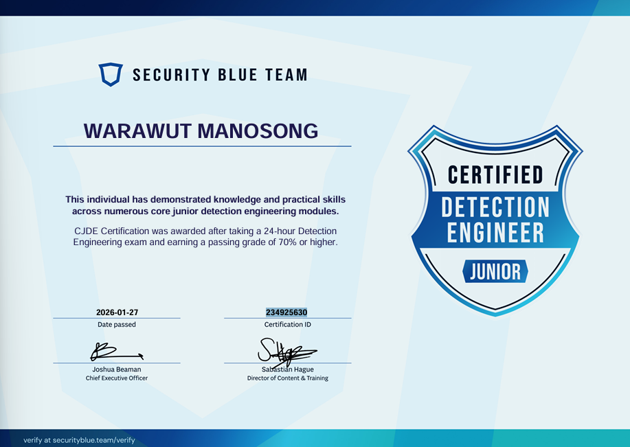

<!DOCTYPE html>
<html lang="en">
<head>
    <meta charset="UTF-8">
    <meta name="viewport" content="width=device-width, initial-scale=1.0">
    <title>CJDE Review — Certified Junior Detection Engineer | Chicken0248</title>
    <meta name="description" content="A detailed review and guide on the Certified Junior Detection Engineer (CJDE) certification from Security Blue Team — covering the course content, exam preparation, the unexpected result twist, and tips for writing Sigma and YARA rules under pressure." />
    <meta property="og:type" content="article" />
    <meta property="og:site_name" content="Chicken0248" />
    <meta property="og:url" content="https://chickenloner.github.io/reviews/cjde/" />
    <meta property="og:title" content="CJDE (Certified Junior Detection Engineer) Review and How to Prepare for It!" />
    <meta property="og:description" content="A detailed review and guide on the Certified Junior Detection Engineer (CJDE) certification from Security Blue Team — covering the course content, exam preparation, the unexpected result twist, and tips for writing Sigma and YARA rules under pressure." />
    <meta property="og:image" content="https://chickenloner.github.io/reviews/cjde/cover.png" />
    <meta name="twitter:card" content="summary_large_image" />
    <meta name="twitter:site" content="@Chicken_0248" />
    <meta name="twitter:title" content="CJDE (Certified Junior Detection Engineer) Review and How to Prepare for It!" />
    <meta name="twitter:description" content="A detailed review and guide on the Certified Junior Detection Engineer (CJDE) certification from Security Blue Team — covering the course content, exam preparation, the unexpected result twist, and tips for writing Sigma and YARA rules under pressure." />
    <meta name="twitter:image" content="https://chickenloner.github.io/reviews/cjde/cover.png" />
    <link rel="icon" href="/chicken0248.png" type="image/png">
    <script src="https://cdn.tailwindcss.com"></script>
    <script crossorigin src="https://unpkg.com/react@18/umd/react.production.min.js"></script>
    <script crossorigin src="https://unpkg.com/react-dom@18/umd/react-dom.production.min.js"></script>
    <script src="https://unpkg.com/@babel/standalone/babel.min.js"></script>
    <script src="https://unpkg.com/lucide@latest"></script>
    <style>
        @keyframes fadeIn {
            from { opacity: 0; transform: translateY(20px); }
            to   { opacity: 1; transform: translateY(0); }
        }
        .animate-fadeIn { animation: fadeIn 0.5s ease-out; }

        /* ── DARK MODE ── */
        .dark.min-h-screen { background: linear-gradient(135deg, #0f172a 0%, #141f35 50%, #0a1628 100%) !important; }
        .dark nav { background-color: rgba(15,23,42,0.96) !important; border-bottom-color: rgba(51,65,85,0.5) !important; }
        .dark .bg-white    { background-color: #1e293b !important; }
        .dark .bg-gray-50  { background-color: #0f172a !important; }
        .dark .bg-gray-100 { background-color: #334155 !important; }
        .dark .bg-amber-50   { background-color: rgba(245,158,11,0.10) !important; }
        .dark .bg-amber-100  { background-color: rgba(245,158,11,0.20) !important; }
        .dark .bg-orange-50  { background-color: rgba(234,88,12,0.10) !important; }
        .dark .bg-orange-100 { background-color: rgba(234,88,12,0.20) !important; }
        .dark .bg-blue-50    { background-color: rgba(37,99,235,0.12) !important; }
        .dark .bg-blue-100   { background-color: rgba(37,99,235,0.20) !important; }
        .dark .bg-green-100  { background-color: rgba(22,163,74,0.20) !important; }
        .dark .text-gray-800 { color: #e2e8f0 !important; }
        .dark .text-gray-700 { color: #cbd5e1 !important; }
        .dark .text-gray-600 { color: #94a3b8 !important; }
        .dark .text-gray-500 { color: #64748b !important; }
        .dark .text-gray-400 { color: #475569 !important; }
        .dark .text-amber-700  { color: #fbbf24 !important; }
        .dark .text-orange-700 { color: #fb923c !important; }
        .dark .text-blue-600   { color: #60a5fa !important; }
        .dark .text-green-700  { color: #4ade80 !important; }
        .dark .border-gray-100 { border-color: #334155 !important; }
        .dark .border-gray-200 { border-color: #475569 !important; }
        .dark .border-amber-200  { border-color: rgba(245,158,11,0.3) !important; }
        .dark .border-orange-200 { border-color: rgba(234,88,12,0.3) !important; }
        .dark .hover\:bg-gray-50:hover { background-color: #1e293b !important; }
        .dark .hover\:text-blue-600:hover { color: #60a5fa !important; }
        .dark ::-webkit-scrollbar       { width: 6px; }
        .dark ::-webkit-scrollbar-track { background: #0f172a; }
        .dark ::-webkit-scrollbar-thumb { background: #334155; border-radius: 3px; }
    </style>
</head>
<body>
    <div id="root"></div>

    <script type="text/babel">
        const { useState, useEffect, useRef } = React;

        const Icon = ({ name, className = "w-6 h-6", ...props }) => {
            const ref = useRef(null);
            useEffect(() => {
                if (ref.current) {
                    const el = lucide.createElement(lucide[name], { class: className });
                    ref.current.innerHTML = '';
                    ref.current.appendChild(el);
                }
            }, [name, className]);
            return <i ref={ref} className={`flex-shrink-0 ${className}`} {...props}></i>;
        };

        /* ── Reusable Components ── */

        const Section = ({ id, title, icon, children }) => (
            <section id={id} className="scroll-mt-24">
                <h2 className="text-2xl font-bold text-gray-800 mb-5 flex items-center gap-3 border-b border-gray-200 pb-3">
                    <Icon name={icon} className="w-6 h-6 text-amber-600" />
                    {title}
                </h2>
                <div className="space-y-4">{children}</div>
            </section>
        );

        let figCount = 0;
        const resetFigCount = () => { figCount = 0; };

        const Fig = ({ src, alt }) => {
            figCount += 1;
            const n = figCount;
            return (
                <figure className="my-5">
                    
                    <figcaption className="text-center text-xs text-gray-400 mt-1.5 font-mono">Figure {n}</figcaption>
                </figure>
            );
        };

        const Callout = ({ children }) => (
            <blockquote className="bg-amber-50 border-l-4 border-amber-400 rounded-r-xl px-5 py-4 my-4 text-gray-700 italic text-sm leading-relaxed">
                {children}
            </blockquote>
        );

        const TipList = ({ items }) => (
            <ul className="list-disc list-outside ml-5 space-y-2 text-gray-700">
                {items.map((item, i) => <li key={i}>{item}</li>)}
            </ul>
        );

        const B = ({ children }) => <strong className="text-gray-800">{children}</strong>;
        const A = ({ href, children }) => (
            <a href={href} target="_blank" rel="noopener noreferrer"
               className="text-blue-600 hover:underline">{children}</a>
        );

        const renderStars = (rating) => {
            const full = Math.floor(rating);
            const half = rating - full >= 0.5;
            return '★'.repeat(full) + (half ? '½' : '') + '☆'.repeat(5 - full - (half ? 1 : 0));
        };

        /* ── App ── */

        const App = () => {
            const [dark, setDark] = useState(() => localStorage.getItem('darkMode') === 'true');
            const [meta, setMeta] = useState(null);
            useEffect(() => { localStorage.setItem('darkMode', dark); }, [dark]);

            useEffect(() => {
                fetch('/data/reviews.json')
                    .then(r => r.json())
                    .then(data => {
                        const entry = data.find(r => r.url === '/reviews/cjde/index.html');
                        if (entry) setMeta(entry);
                    })
                    .catch(() => {});
            }, []);

            resetFigCount();

            const tocItems = [
                { id: 'introduction',    label: 'Introduction',                      icon: 'BookOpen'      },
                { id: 'course-experience', label: 'Course Experience',               icon: 'GraduationCap' },
                { id: 'exam-experience', label: 'Exam Preparation and Experience',   icon: 'ClipboardList' },
                { id: 'exam-tips',       label: 'Exam Tips & Key Takeaways',         icon: 'Lightbulb'     },
            ];

            return (
                <div className={`min-h-screen bg-gradient-to-br from-slate-50 via-amber-50 to-orange-50 ${dark ? 'dark' : ''}`}>

                    {/* Navigation */}
                    <nav className="sticky top-0 z-50 bg-white/80 backdrop-blur-md border-b border-gray-200 px-4 py-3">
                        <div className="max-w-4xl mx-auto flex items-center justify-between">
                            <div className="flex items-center gap-2 text-sm flex-wrap">
                                <a href="/" className="flex items-center gap-2 hover:opacity-80 transition-opacity">
                                    
                                    <span className="font-bold text-gray-800 hidden sm:inline">Chicken0248</span>
                                </a>
                                <span className="text-gray-400">/</span>
                                <a href="/reviews/index.html" className="font-medium text-gray-600 hover:text-blue-600 transition-colors">Reviews</a>
                                <span className="text-gray-400">/</span>
                                <span className="font-semibold text-gray-700">CJDE</span>
                            </div>
                            <button onClick={() => setDark(!dark)}
                                className="p-2 rounded-lg hover:bg-gray-100 text-gray-600 transition-colors text-lg">
                                {dark ? '\u2600\uFE0F' : '\uD83C\uDF19'}
                            </button>
                        </div>
                    </nav>

                    <main className="max-w-4xl mx-auto px-4 py-8 space-y-10 animate-fadeIn">

                        {/* Hero */}
                        <div className="relative overflow-hidden rounded-3xl shadow-2xl">
                            
                            <div className="absolute inset-0 bg-gradient-to-t from-black/80 via-black/30 to-transparent" />
                            <div className="absolute bottom-0 left-0 right-0 p-6 md:p-8 text-white">
                                <h1 className="text-2xl md:text-3xl font-extrabold tracking-tight mb-3 leading-snug">
                                    CJDE (Certified Junior Detection Engineer) — Review and How to Prepare for It!
                                </h1>
                                <div className="flex flex-wrap gap-2 text-sm">
                                    <span className="bg-white/20 backdrop-blur-sm px-3 py-1 rounded-full flex items-center gap-1.5">
                                        <Icon name="Building2" className="w-3.5 h-3.5" /> Security Blue Team
                                    </span>
                                    <span className="bg-white/20 backdrop-blur-sm px-3 py-1 rounded-full flex items-center gap-1.5">
                                        <Icon name="Calendar" className="w-3.5 h-3.5" /> January 2026
                                    </span>
                                    <span className="bg-blue-500/80 backdrop-blur-sm px-3 py-1 rounded-full flex items-center gap-1.5">
                                        <Icon name="Shield" className="w-3.5 h-3.5" /> Blue Team · Detection Engineering
                                    </span>
                                    <span className="bg-green-500/80 backdrop-blur-sm px-3 py-1 rounded-full flex items-center gap-1.5">
                                        <Icon name="CheckCircle" className="w-3.5 h-3.5" /> Passed
                                    </span>
                                </div>
                            </div>
                        </div>

                        {/* Metadata */}
                        <div className="bg-white rounded-2xl border border-gray-200 p-5 shadow-sm">
                            <div className="grid grid-cols-2 md:grid-cols-4 gap-4 text-sm">
                                <div><span className="text-gray-500 block">Certification</span><span className="font-semibold text-gray-800">CJDE</span></div>
                                <div><span className="text-gray-500 block">Provider</span><span className="font-semibold text-gray-800">Security Blue Team</span></div>
                                <div><span className="text-gray-500 block">Difficulty</span><span className="font-semibold text-amber-600">{meta?.difficulty ?? '—'}</span></div>
                                <div><span className="text-gray-500 block">Rating</span>
                                    {meta?.rating ? (
                                        <span className="font-semibold text-gray-800 flex items-center gap-1">
                                            <span className="text-yellow-500">{renderStars(meta.rating)}</span>
                                            <span className="text-gray-500 font-normal text-xs ml-0.5">{meta.rating.toFixed(1)}/5.0</span>
                                        </span>
                                    ) : <span className="text-gray-400">—</span>}
                                </div>
                            </div>
                        </div>

                        {/* Table of Contents */}
                        <div className="bg-white rounded-2xl border border-gray-200 p-6 shadow-sm">
                            <h2 className="text-lg font-bold text-gray-800 mb-4 flex items-center gap-2">
                                <Icon name="List" className="w-5 h-5 text-amber-600" />
                                Table of Contents
                            </h2>
                            <div className="grid sm:grid-cols-2 gap-1">
                                {tocItems.map((item, i) => (
                                    <a key={item.id} href={`#${item.id}`}
                                       className="flex items-center gap-2 px-3 py-2 rounded-lg text-gray-700 hover:bg-gray-50 hover:text-blue-600 transition-colors text-sm">
                                        <Icon name={item.icon} className="w-4 h-4 text-gray-400" />
                                        <span className="text-gray-400 font-mono text-xs w-5">{i + 1}.</span>
                                        <span className="font-medium">{item.label}</span>
                                    </a>
                                ))}
                            </div>
                        </div>

                        {/* ═══════════ INTRODUCTION ═══════════ */}
                        <Section id="introduction" title="Introduction" icon="BookOpen">
                            <p className="text-gray-700 leading-relaxed">
                                Hello everyone! It's me, <B>Chicken0248</B>, again, and in this blog I'll give my review of the{' '}
                                <B>Certified Junior Detection Engineer (CJDE)</B> certification — the first ever detection engineering certificate from{' '}
                                <B>Security Blue Team</B>, the well-known vendor behind BTL1 and BTL2. If you're already familiar with BTL1, think of CJDE as BTL1 but for detection engineers.
                            </p>
                            <p className="text-gray-700 leading-relaxed">
                                Detection engineering is a role that sits above the typical SOC L1 tier, though some L1 analysts already do it day-to-day. It essentially involves tuning existing alerts and rules, or creating new ones, to detect threats more effectively and reduce the overwhelming volume of false positives that leads to alert fatigue. As SOC becomes a global trend, demand for detection engineers is growing — some companies don't use that exact title, but alert tuning and rule creation often appear in the job description regardless. To equip you with the right mindset and skills for this work, Security Blue Team developed the CJDE course.
                            </p>

                            <Fig src="image-1.png" alt="CJDE certification page on Security Blue Team" />

                            <p className="text-gray-700 leading-relaxed">
                                The course expects students to have some field experience (<B>1–3 years recommended</B>), and is priced at <B>399 GBP</B> — the same as BTL1. Security Blue Team recommends taking CJDE as your second certification after BTL1, and the reason makes sense: you need to understand what "normal" looks like before you can write effective detection rules.
                            </p>
                            <p className="text-gray-700 leading-relaxed">
                                Once you purchase the course, you can start it whenever you're ready — but once you do, a <B>4-month countdown</B> begins. That's your window for accessing course content and labs. The exam voucher is valid for <B>12 months</B> from when you start the course, and you get <B>2 attempts</B>. If you fail the first attempt, you must wait <B>10 days</B> before retaking.
                            </p>
                            <p className="text-gray-700 leading-relaxed">
                                With that, let's jump into the course itself.
                            </p>
                        </Section>

                        {/* ═══════════ COURSE EXPERIENCE ═══════════ */}
                        <Section id="course-experience" title="Course Experience" icon="GraduationCap">
                            <Fig src="image-2.png" alt="CJDE course modules overview on Security Blue Team" />

                            <p className="text-gray-700 leading-relaxed">
                                The <A href="https://www.securityblue.team/certifications/certified-junior-detection-engineer">CJDE course</A> consists of <B>18 modules</B>, all text-based — so there's a lot of reading ahead of you. The "Junior" label is reflected in the number of "essentials" modules included. Even though the recommended experience is 1–3 years, the course still walks through fundamentals like the history of networking, cabling, and the OSI model. I found myself skimming through those, having already covered them in college.
                            </p>
                            <p className="text-gray-700 leading-relaxed">
                                That said, I didn't engage deeply with every module. To keep my momentum going, I focused on the ones that would directly benefit me:
                            </p>
                            <ul className="list-disc list-outside ml-5 space-y-1 text-gray-700">
                                <li><B>Introduction to SIEM</B> — covers ELK, Splunk, and Graylog; I took it mainly for the Graylog exposure</li>
                                <li><B>Introduction to Threat Intelligence</B> — understanding different IOC types and Threat Intelligence Platforms (TIPs) pays off directly in rule creation and alert tuning</li>
                                <li><B>YARA &amp; Sigma Essentials</B> — always useful to see how others structure their rules and what methodology they apply</li>
                                <li><B>Zeek Essentials</B> — I'm not a fan of Zeek, but you still need it; this is where my AI agent subscription really came in handy 😄</li>
                                <li><B>Malware Analysis for Detection Engineering</B> — not Ghidra or IDA, but static analysis with strings and PEStudio, dynamic analysis, and ultimately writing a YARA rule to detect the sample in the labs</li>
                                <li><B>Detection Rule Creation and Tuning</B> — covers more than you'd expect, including detection logic in AWS</li>
                                <li><B>Threat Intelligence Integration for Detection</B> — a standout module where you perform adversary simulation and then write detection rules to catch the simulated behaviour</li>
                                <li><B>Behavioral Analytics for Threat Detection</B> — discusses how baselining and ML can surface suspicious behaviour; mostly theoretical with no lab, but worth knowing</li>
                                <li><B>AI for Defenders</B> — hands-on application of the previous module, using Python and pandas for anomaly detection and automated alert prioritization</li>
                            </ul>
                            <p className="text-gray-700 leading-relaxed">
                                Looking back, once you push through the essential modules, you get to do genuinely interesting detection engineering work.
                            </p>

                            <Fig src="image-3.png" alt="CJDE course content timeline and access period" />

                            <p className="text-gray-700 leading-relaxed">
                                With 4 months of access from the moment you start, you'll want to plan your study schedule carefully and build in buffer time for when work or life gets in the way.
                            </p>

                            <Fig src="image-4.png" alt="CJDE lab interface showing 120-hour lab access" />

                            <p className="text-gray-700 leading-relaxed">
                                For labs, you have a total of <B>120 hours</B> to use — which is generous. I wasted a fair amount of that time by clicking "Start" and then getting pulled away by work, though thankfully the lab auto-stops after 6 hours of inactivity. Lab access expires at the same time as your course content access.
                            </p>
                            <p className="text-gray-700 leading-relaxed">
                                Each lab has a solution in the corresponding course module, so if you get stuck you can refer to it, take notes, and carry those learnings into the exam.
                            </p>
                        </Section>

                        {/* ═══════════ EXAM PREPARATION AND EXPERIENCE ═══════════ */}
                        <Section id="exam-experience" title="Exam Preparation and Experience" icon="ClipboardList">
                            <Fig src="image-5.png" alt="CJDE Playground — exam simulation environment" />

                            <p className="text-gray-700 leading-relaxed">
                                I hesitated for a long time before sitting the exam — detection engineering isn't my primary strength. What finally pushed me over the line was the <B>CJDE Playground</B>, a special lab that simulates the exam environment, which Security Blue Team released in January 2026. That's actually why I took the exam so late — I had purchased it during the early launch at a discount and was waiting specifically for this.
                            </p>

                            <Fig src="image-6.png" alt="CJDE Playground environment walkthrough" />

                            <p className="text-gray-700 leading-relaxed">
                                The Playground gave me everything I needed to understand the exam environment. Even so, deep down I still didn't feel fully ready — but the show had to go on.
                            </p>
                            <p className="text-gray-700 leading-relaxed">
                                I planned to take the exam on Thursday, 29 January 2026, using a day off (I had attended an LLM Research Bootcamp on 23–25 January and needed time to recover). But on Tuesday, 27 January, after dinner and a good rest, I took one last look at the Playground and suddenly thought: <em>"Fail is fail, pass is pass — nothing matters, let's just go for it now and see if I can finish in 4 hours!"</em> (Spoiler: I did.) With that thought in my head, I clicked "Start Exam" like I was possessed.
                            </p>
                            <p className="text-gray-700 leading-relaxed">
                                Once the environment initialised, I read through the full set of instructions carefully. Even with Playground experience, the actual exam environment felt different — and since I paid for this out of my own pocket, I wasn't going to skip a single line.
                            </p>

                            <Fig src="image-7.png" alt="CJDE exam environment — CI/CD pipeline for rule submission" />

                            <p className="text-gray-700 leading-relaxed">
                                This exam cannot be cheesed by manually hunting through artifacts in a SIEM. You must write your own <B>Sigma</B> and <B>YARA</B> rules (and in some cases <B>Zeek</B> rules) and push them through a <B>CI/CD pipeline</B>. There are no artifacts handed to you directly — but don't worry, the course walks you through setting up the environment, and you'll get the hang of it within minutes (or an hour at most).
                            </p>

                            <Fig src="image-8.png" alt="Threat intelligence reports provided in the exam" />

                            <p className="text-gray-700 leading-relaxed">
                                You'll also have <B>Threat Intelligence reports</B> to read — and I cannot stress this enough: <B>read all of them</B>. The majority of your score depends on how well you interpret these reports and translate them into detection rules.
                            </p>

                            <Fig src="image-9.png" alt="Exam environment resembling a threat hunting lab" />

                            <p className="text-gray-700 leading-relaxed">
                                The experience escalated quickly into something that felt just like a threat hunting lab — the main difference being that instead of writing SPL queries, you're writing Sigma and YARA rules. The mental process is largely the same.
                            </p>

                            <Fig src="image-10.png" alt="DetectionStream.com — platform for practising rule writing" />

                            <p className="text-gray-700 leading-relaxed">
                                I should mention that I used <A href="https://detectionstream.com/">detectionstream.com</A> to practise and get comfortable with YARA and Sigma rule writing. I even studied some of the published rules on the platform — and yes, some of that directly helped during the exam.
                            </p>

                            <Fig src="image-11.png" alt="Exam submission — after 3 hours 40 minutes" />

                            <p className="text-gray-700 leading-relaxed">
                                After 3 hours and 40 minutes (well past midnight at that point), I pushed my last detection rule and submitted. The result came back: <B>Failed</B>. The passing threshold is <B>70%</B>, with a gold coin distinction for <B>90%+</B>. Even though I had mentally prepared for this outcome, it still stung.
                            </p>

                            <Fig src="image-12.png" alt="Email from Security Blue Team with corrected result" />

                            <p className="text-gray-700 leading-relaxed">
                                I went to sleep and started the next morning as a work day. As part of my morning routine I checked my messages — and found both an email and a message from someone I know at Security Blue Team, sent the night before while I was asleep. It turned out I had <B>passed</B>, with only one question wrong. The initial "Failed" result was caused by a rule formatting evaluation issue — a bug in the automated grading. After a manual review by the SBT team, the correct score was confirmed. Hats off to them for proactively reviewing exam submissions without me having to ask.
                            </p>

                            <Fig src="image-13.png" alt="CJDE certificate — Certified Junior Detection Engineer" />

                            <p className="text-gray-700 leading-relaxed">
                                And with that, I can confidently call myself a certified junior detection engineer.
                            </p>
                            <p className="text-gray-700 leading-relaxed">
                                Before wrapping up — if you're wondering whether there are any practice labs available: BTLO doesn't have CJDE-specific content, but{' '}
                                <A href="https://detectionstream.com/">detectionstream.com</A> is an excellent substitute for practising your Sigma and YARA rule writing.
                            </p>
                        </Section>

                        {/* ═══════════ EXAM TIPS ═══════════ */}
                        <Section id="exam-tips" title="Exam Tips &amp; Key Takeaways" icon="Lightbulb">
                            <div className="bg-amber-50 rounded-2xl border border-amber-200 p-6">
                                <TipList items={[
                                    'Plan your exam day wisely — you have a 24-hour window.',
                                    <span><B>Read all instructions carefully</B> before starting.</span>,
                                    'Take time to understand the exam environment. It looks complex at first, but you\'ll get a feel for it quickly once you push a few test rules through the pipeline.',
                                    <span><B>Read every TI report</B> — the majority of your score depends on how well you interpret and translate them into detection rules.</span>,
                                    <span><B>Read each question carefully</B> before writing your rule.</span>,
                                    'Write your rules in a text editor of your choice (Sublime Text, nano, etc.) and push via git — it\'s faster than working directly in the environment.',
                                    'Keep a local copy of each rule. Version control is there, but reverting via git is slower than just duplicating the file.',
                                    <span>When pushing rules, use a single combined command: <code className="bg-amber-100 px-1.5 py-0.5 rounded text-sm font-mono">git commit -a -m "test" &amp;&amp; git push</code> — simple and fast. (Don't use this in a real environment though 🤷)</span>,
                                    <span>Use <A href="https://detectionstream.com/">detectionstream.com</A> to practise writing YARA and Sigma rules before the exam.</span>,
                                ]} />
                            </div>
                            <p className="text-gray-700 leading-relaxed">
                                That's it for this blog.
                            </p>
                            <p className="text-gray-700 leading-relaxed">Peace ✌️</p>
                        </Section>

                        {/* Footer navigation */}
                        <div className="text-center py-8 border-t border-gray-200">
                            <a href="#" className="text-blue-600 hover:text-blue-700 font-medium text-sm inline-flex items-center gap-1">
                                <Icon name="ArrowUp" className="w-4 h-4" /> Back to top
                            </a>
                            <span className="mx-3 text-gray-300">|</span>
                            <a href="/reviews/index.html" className="text-blue-600 hover:text-blue-700 font-medium text-sm inline-flex items-center gap-1">
                                <Icon name="ArrowLeft" className="w-4 h-4" /> All Reviews
                            </a>
                        </div>

                    </main>
                </div>
            );
        };

        ReactDOM.createRoot(document.getElementById('root')).render(<App />);
    </script>
</body>
</html>
